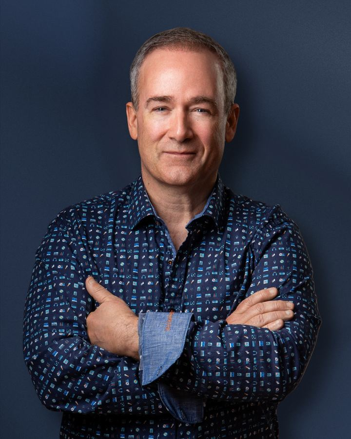
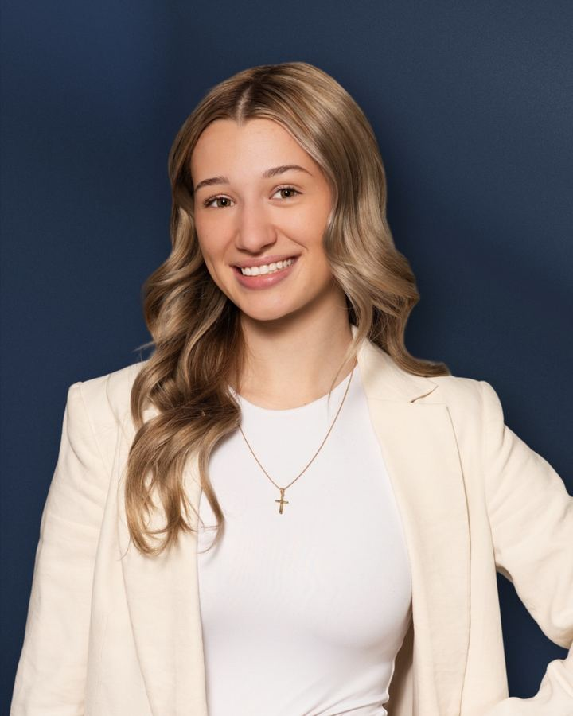
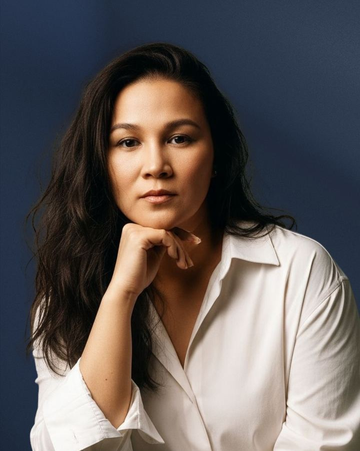
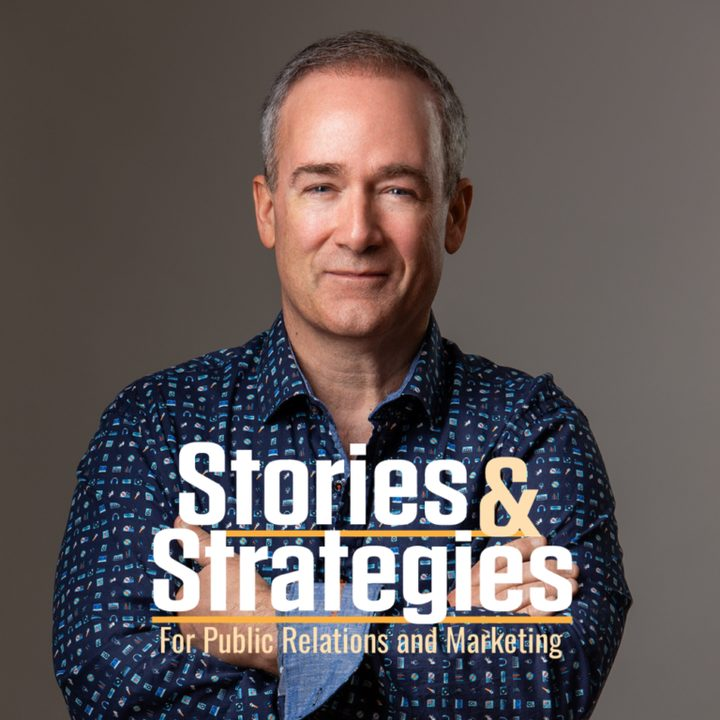

Create
From concept to your first stream, we’re with you every step: music, promos, recording, editing, and getting your show found on every major platform.
Is your brand being heard? We take the time to understand your business strategy and how a podcast weaves into it, then develop content that’s engaging, entertaining, and driven by measurable results.
Whether your focus is global or community targeted, Stories and Strategies produces attention grabbing podcasts.
We take the time to understand your business strategy and how a podcast weaves into that. Then, we develop content that’s engaging, entertaining, and driven by measurable results.
Our team is made up of seasoned professionals in audio and video production, strategic communications and marketing planning, and presentation training.
From concept to your first stream, we’re with you every step: music, promos, recording, editing, and getting your show found on every major platform.
Most listeners discover new shows from other podcasts. We build and run your growth plan, promo, interview, intro and feed swaps, using podcast specific analytics.
Audio ads drive action. We plan, write, record, distribute and measure your podcast ads, billed hourly, never as a percentage of your spend.
Media and presentation coaching since 2001, for CEOs, TED speakers, Olympic athletes and hosts who want to sound their best on mic.

Doug is a sought after podcast producer specializing in podcast development, analytics, and marketing.
His experience includes award winning radio and TV journalism, leading communications strategies for corporations on multibillion dollar projects, and media & presentation coaching with executives, politicians, Olympic athletes, and TED Talk presenters.

Emily plays a pivotal part in orchestrating episode bookings and conducting thorough research and analysis for podcast development.
Her enthusiasm for learning and dedication to her craft make her an invaluable asset to the Stories and Strategies team.

Jocelyn keeps the wheels turning behind every episode and every client relationship.
She ensures seamless day to day operations, from managing timelines to keeping clients informed and supported every step of the way.
Filip is an audio and video editor with more than a decade of experience.
His extensive knowledge across a wide variety of editing tools lets him blend technical prowess and creative vision into compelling narratives.
With decades of broadcast experience, Neal is very familiar with what looks good and sounds good.
He is well versed in editing, producing, graphic design, and digital animation across countless software platforms.

Conversations on strategic communications, storytelling and podcasting, hosted by Doug Downs.
Tell us about your podcast idea. Email us anytime and we’ll get back to you.
Email Us